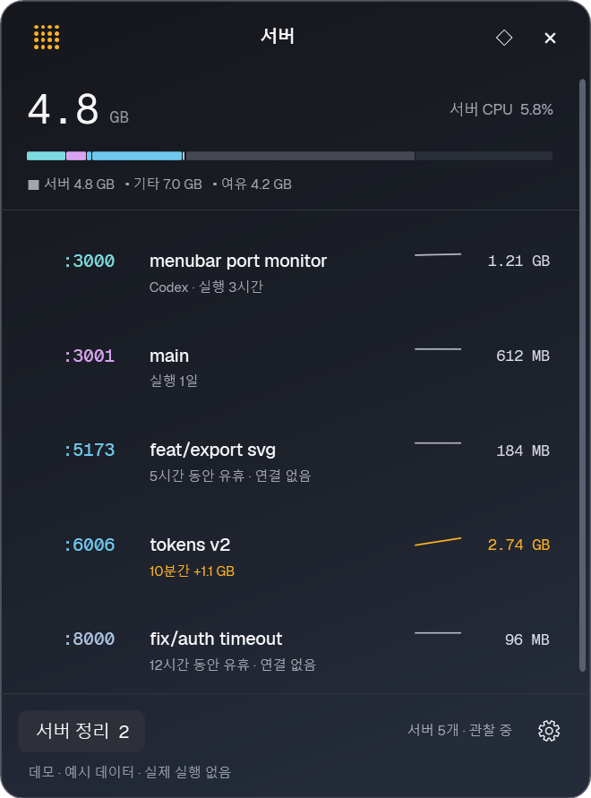
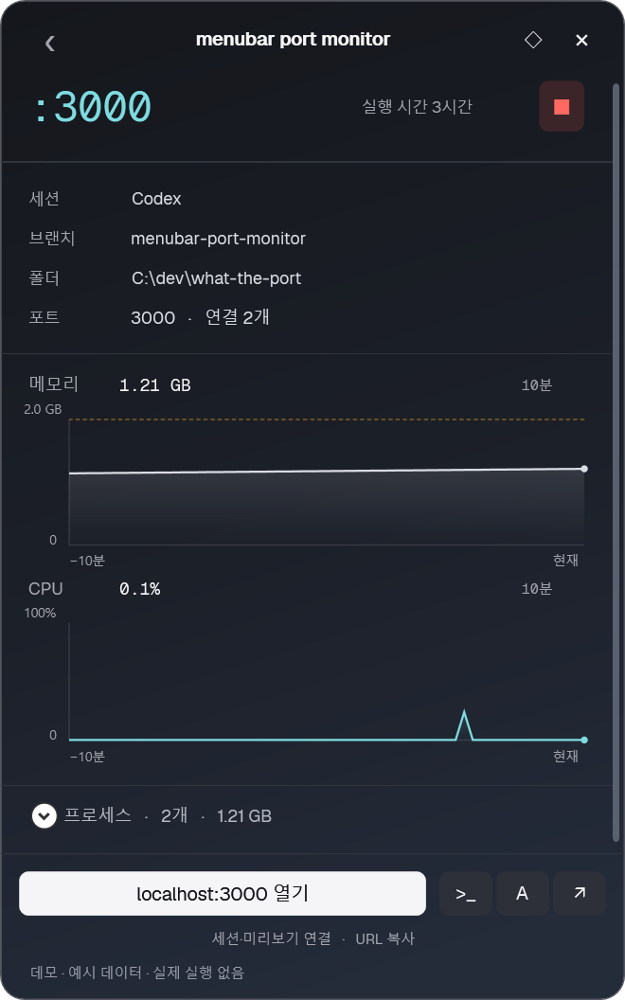
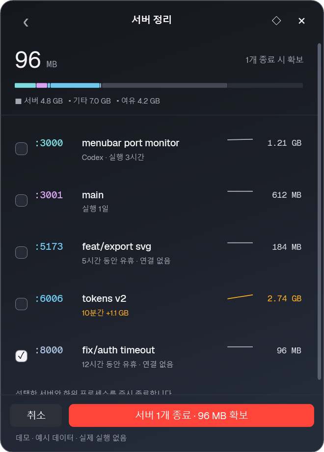
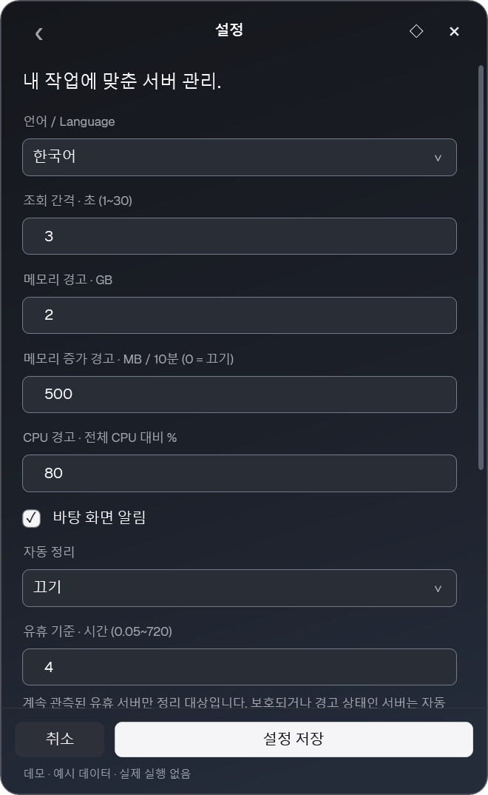

:3000 / CONTEXT어디서 시작했는지,
어디서 시작했는지,
어디로 돌아갈지.
프로젝트 폴더와 Git 브랜치 확인. 로컬 URL과 터미널 열기, 등록한 Codex·Claude Code 세션으로 작업 재개.
세션 ID·미리보기 URL 직접 등록. 대화 기록 열람 없음.
작은 트레이, 명확한 작업 공간
어떤 프로젝트인지. 얼마나 쓰고 있는지.
Windows 트레이에서 확인하고,
잊고 있던 개발 서버는 가볍게 정리.
Windows 10 / 11 · x64 · .NET Framework 4.8
로컬 테스트용 포터블 빌드 · 코드 서명 미적용

01 Windows 네이티브 C# + WPF
02 서버 탐지 IPv4 + IPv6
03 기본 자동 정리 Off
A LITTLE LESS GUESSWORK
목록에서 상태 확인, 상세에서 원인 확인, 정리 화면에서 대상 선택.
탭 또는 방향키로 화면 선택.
샘플 화면으로, 내 컴퓨터의 서버에 접근하지 않음.



LESS NOISE. MORE CONTEXT.
프로젝트 폴더와 Git 브랜치 확인. 로컬 URL과 터미널 열기, 등록한 Codex·Claude Code 세션으로 작업 재개.
세션 ID·미리보기 URL 직접 등록. 대화 기록 열람 없음.
서버와 소유 하위 프로세스의 메모리·CPU를 함께 집계. 최근 10분의 추이와 설정한 임계값 기반 경고.
2 GB기본 메모리 경고
500 MB10분 증가량 경고
idle 후보와 예상 회수 메모리 확인 후 필요한 서버만 종료. 데이터베이스·셸·에이전트 보호 정책 적용.
Off / Ask / Automatic 중 선택. 보호·경고 서버는 자동 정리 제외. 실제 종료는 즉시 종료 방식.
PS > .\wtp.exe list
PORT MEMORY PROJECT
:3000 1.21 GB local-dashboard
:5173 184 MB component-lab
:8000 96 MB api-sandbox
PS > .\wtp.exe list --json
예시 출력 · 대화형 TUI는 미지원
A LITTLE BREATHING ROOM.
포트와 서버 상태 확인부터, 끝난 작업의 정리까지.
Windows용 다운로드Windows 10/11 x64 · .NET Framework 4.8 · ZIP 0.9 MB
코드 서명이 없는 로컬 테스트용 빌드. 새 배포 전 보안 검토 필요.
파일 무결성 확인용 SHA-256앱·DLL·폰트 파일을 같은 폴더에 유지.
관리자 권한 없이 트레이에 상주.
개발 서버 실행 후 목록 확인.
원본 WhatThePort의 비공식 Windows 이식입니다. WPF 트레이 UI, 포트 탐지, 차트와 정리 흐름을 구현했습니다. 한국어·영어 UI를 지원하며 설정에서 전환할 수 있습니다. 서버 재시작·자동 업데이트·TUI는 미구현입니다.
기본 필터는 Node, Python, .NET 등의 개발 런타임입니다. 사용자 정의 실행 파일은 모든 사용자 리스너 표시로 표시할 수 있습니다. wmux나 디버거의 내부 포트도 포함될 수 있으며 모든 리스너가 웹 서버인 것은 아닙니다.
로컬 TCP 테이블과 프로세스 정보로 상태를 확인합니다. 텔레메트리·자동 업데이트 요청은 없습니다. 에이전트의 대화 기록이나 인증 파일을 읽지 않으며 정확한 세션 ID는 직접 등록합니다. 이 웹 페이지에도 분석·추적 스크립트가 없습니다.
기본값은 Off입니다. 설정에서 Ask 또는 Automatic을 선택할 수 있습니다. 자동 정리는 연속 관측된 idle 서버만 대상으로 하며, 보호·경고 서버는 제외합니다. 처음에는 종료해도 되는 테스트 서버로 확인하세요.
Windows 네이티브 TCP 프로세스를 대상으로 합니다. WSL·Docker 내부 PID와 자원 귀속, UDP, 다른 사용자의 프로세스 상세는 지원하지 않습니다.